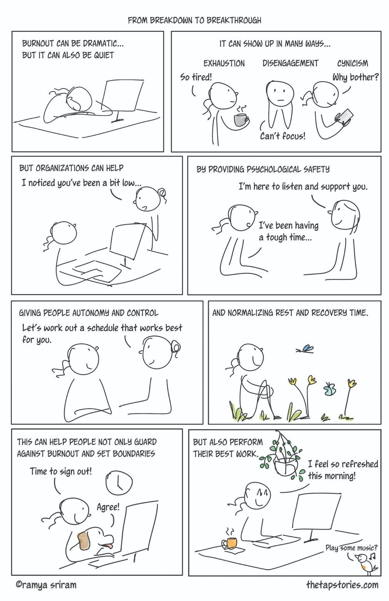
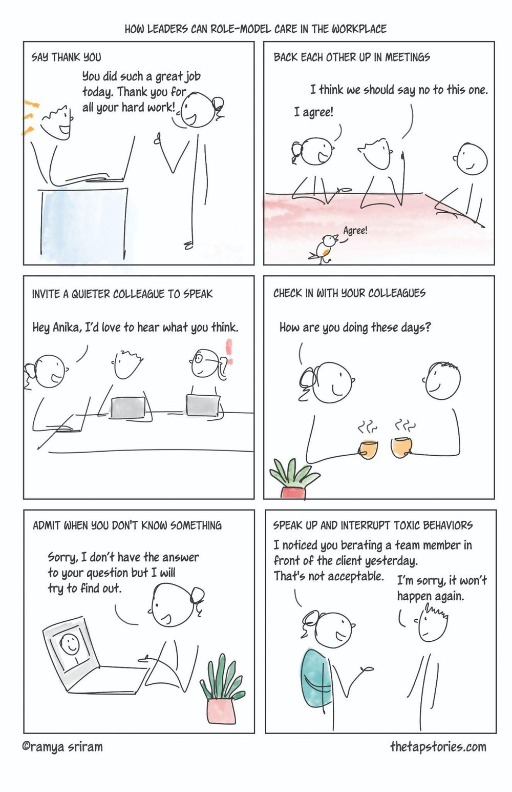

Turn the book's ideas into a conversation with your own workplace.
These tools are designed to help organizations, managers, and individuals notice patterns, start better conversations, and identify areas that may need attention. They translate key ideas from Heal the Workplace into structured reflection and practical next steps.
A cycle for organizational longevity
RENEW brings the book's central ideas together in a five-part cycle. It begins with recovery, moves through culture and sustainable work, makes space for experimentation, and is held together by leadership.
Hover or tap a stage to see how it fits into the cycle.
Three assessments, three vantage points
From the perspective of the organization, the manager or team, and the individual. These are reflective workplace tools, not clinical or medical diagnoses.
Surface the patterns before they harden
Three assessments examine culture at the organizational, team, and individual levels. These are reflective workplace tools, not clinical or medical diagnoses.
Ideas from the book, drawn differently
Heal the Workplace includes original sketchnotes that turn complex ideas about burnout, workplace culture, and leadership into accessible visual stories. Two selected sketchnotes, as a preview of the book's illustrated approach.

